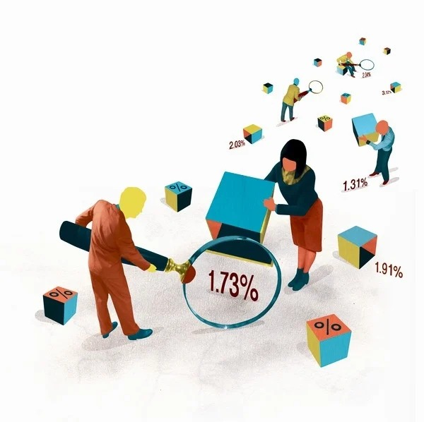

Análisis de ratio financiero
Ofrecemos un análisis completo de tu ratio financiero, permitiéndote entender el estado actual o pasado de tu organización.
Visión global de tu negocio
Brindamos una visión global crítica de tu negocio, ayudándote a administrar mejor los resultados financieros y las tendencias más importantes a lo largo del tiempo.

Soporte prioritario
Los usuarios del plan Premium reciben soporte prioritario por parte de nuestro equipo de expertos.